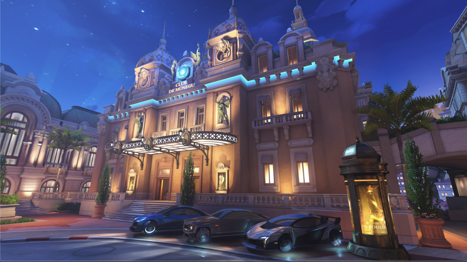

Quieres aprender a jugar a Overwatch 2?
Con Ow2 pasándose al free to play seguro ya has notado su cantidad de personajes jugables, que a día de hoy dan una cantidad de 35 héroes con los que podemos conseguir la victoria pero para eso primero debemos conocerlos tanto a ellos como los modos de juegos que conforman a este título. Empezemos por ahi si te parece bien.
Modos de juego:
Overwatch 2 cuenta con muchísimos modos que van rotando que los puedes encontrar en Arcade y ni hablar de los mapas creados por la comunidad donde puedes jugar mapas de parkour, entrenamiento o jugar a la papa caliente con genji, pero yo te hablaré de los 8 más normales y los principales que estarás jugando todo el tiempo y más si quieres entrar en el competitivo.
Modo Avance:
En este modo de juego los jugadores tendrán que conseguir el control de un robot, que empezará a avanzar hacia la base enemiga. Un equipo ganará si consigue llevar al robot hasta el punto de spawn del equipo enemigo antes que se acabe el tiempo, si el tiempo termina ganará el equipo con más metros empujados aunque también puede surgir el tiempo extra. Es casi parecido al modo escolta.

Modo control:
Este es un modo de juego de Overwatch 2 que se juega al mejor de tres rondas. Los jugadores tendrán que capturar un punto central por tres rondas. Estar dentro del punto sin ningún enemigo cerca hará que la barra de progreso empiece a avanzar. Si un equipo consigue llenar la barra al 100% entonces ganará la ronda.

Modo Escolta:
Este modo de juego dispone de forma asimétrica los objetivos a cumplir. El atacante tendrá que escoltar una carga a través de unas vías que atraviesan el mapa de juego. Los defensores tendrán que evitar que avancen la carga estando cerca de ella, ya que si hay enemigos cerca la carga no puede avanzar. A lo largo del recorrido hay varios puntos de control en los que el punto de aparición de los atacantes avanzará si pasan ciertos límites lo que también refresca el tiempo que tienen los atacantes para empujar la carga.
Modo Hibrido:
Este modo de juego es un modo de juego asimétrico con una división entre atacantes y defensores. En este modo de juego los atacantes tendrán que capturar un punto de interés mientras avanzan una carga a su meta. Es una combinación de los dos modos de juego anteriormente descritos.

Modo Captura la bandera:
No hay mucho que explicar son dos equipos que pelean por tomar la bandera del rival y llevarla a base el primero en capturar 6 veces ganará la partida, también debo decirte que no podrás usar tus habilidades mientras llevas la bandera sino la dejarás caer en el mapa.